01 · Roles management
System and custom roles, assigned users, rights summaries, and role actions.
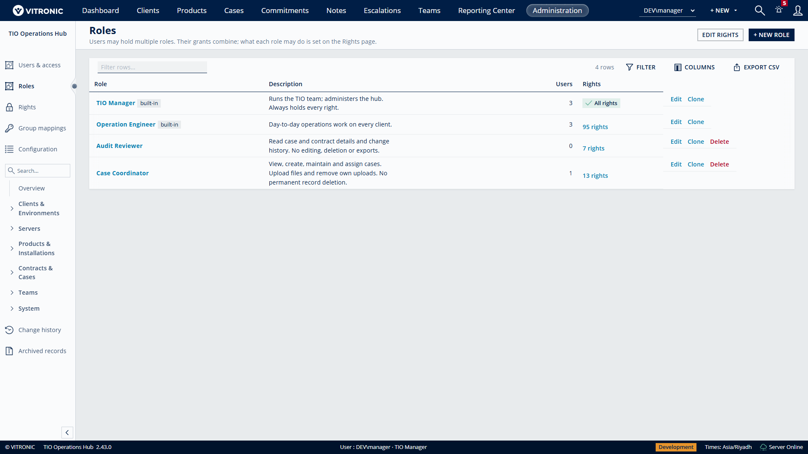
Authorization administration · Version 2.43.0 · 30 October 2026
System and custom roles, assigned users, rights summaries, and role actions.

Name, description, and activation controls for a custom role.
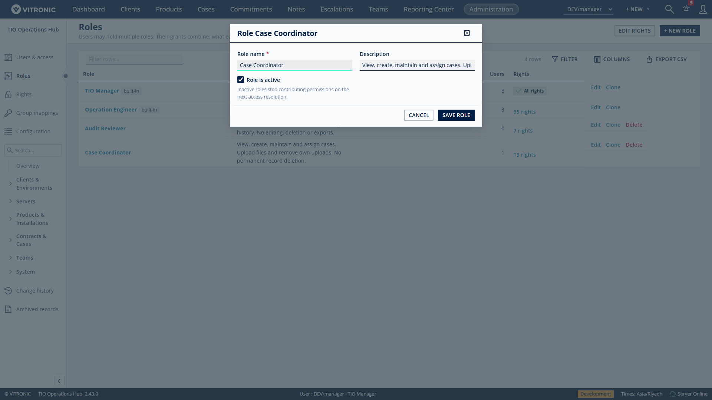
Cases permissions, independent assignments, filters, and dependency descriptions.
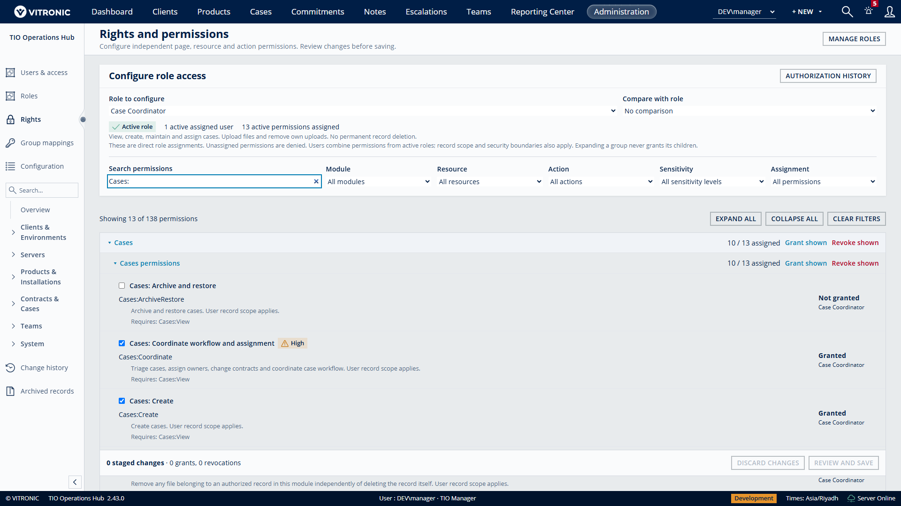
Case Coordinator compared with Audit Reviewer, filtered to differences.
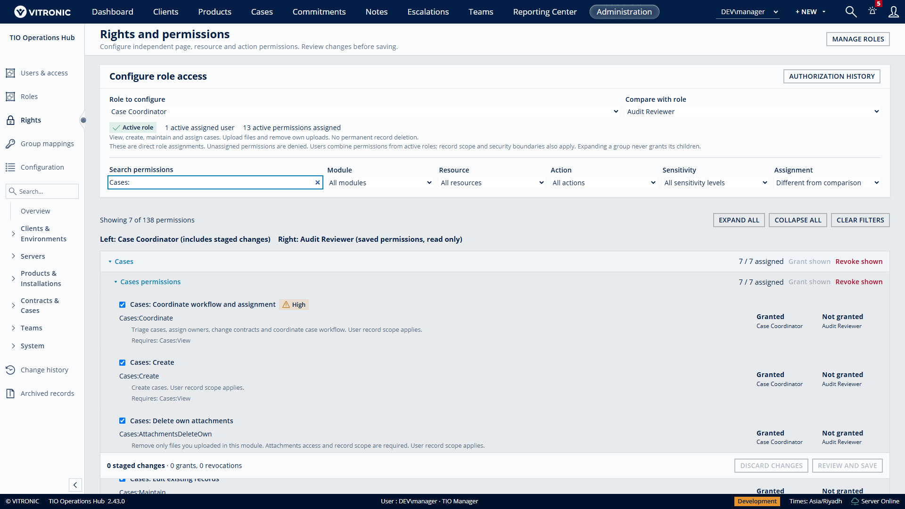
Preview of a staged sensitive grant before any change is saved.
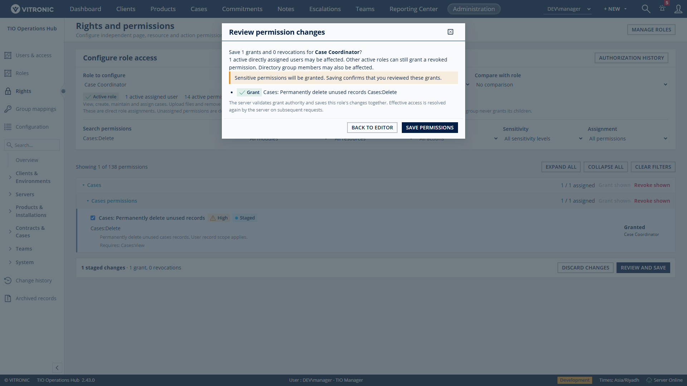
User identities, role assignments, account status, and access actions.
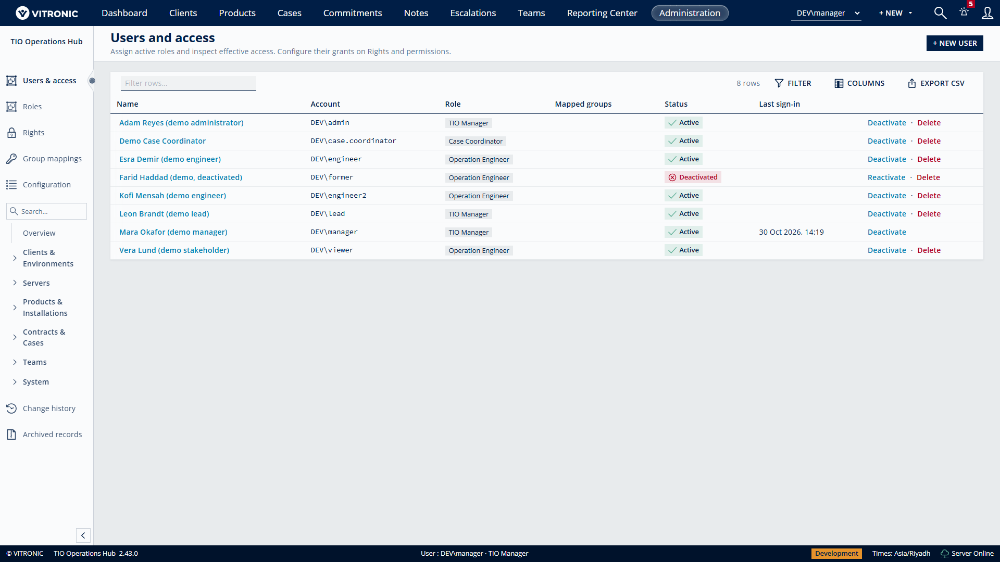
Effective permissions with the contributing role for a fictional user.
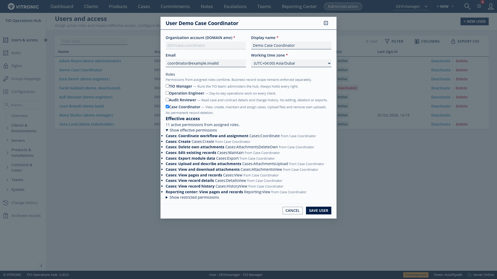
Recorded access administration changes and actors.
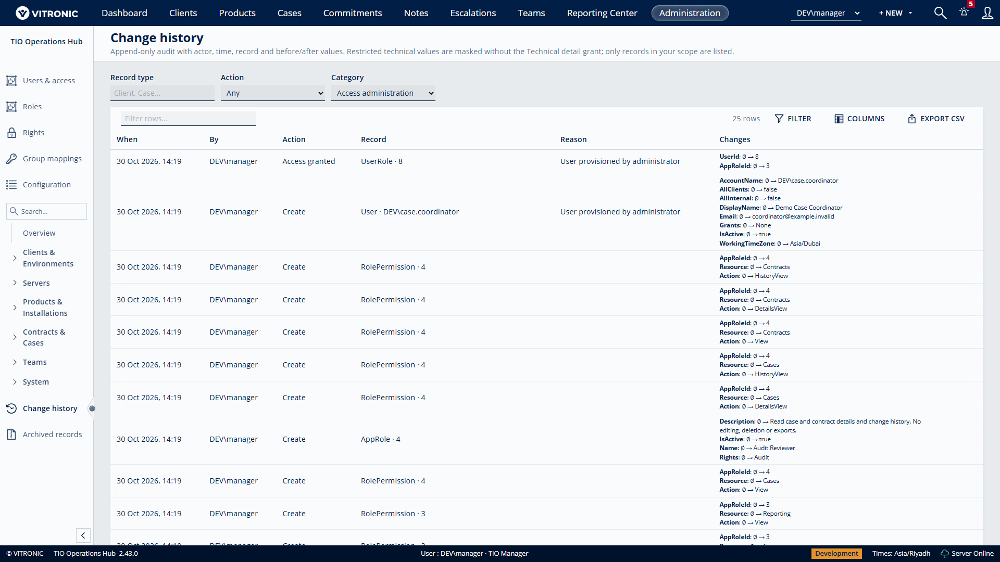
A case coordinator cannot open a restricted Contracts page.
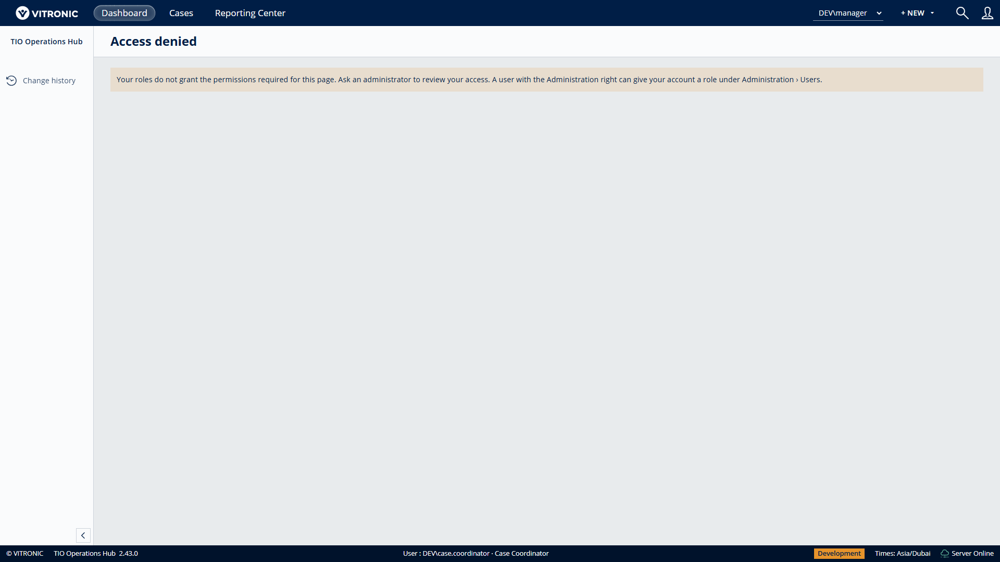
Role selection and permission filters at a 430-pixel viewport width.
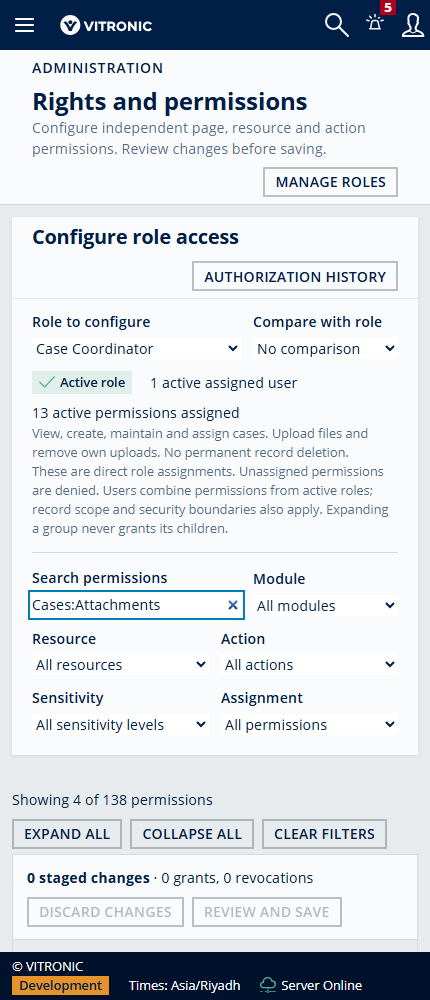
Independent file grants and their prerequisites in the scrolled mobile editor.
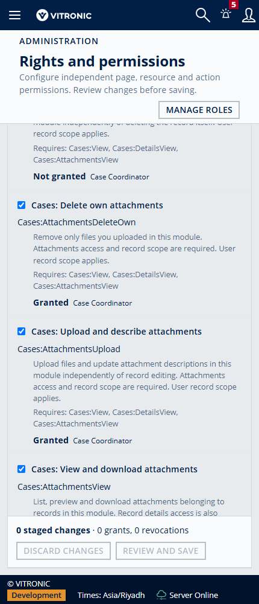
Screenshots of the actual application using an isolated local database and fictional users. Desktop captures: 1920 × 1080. Mobile capture: 430 × 1000. Click an image to view its full resolution. No production data is shown.